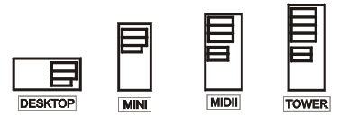

Jednostka centralna
płyta główna | procesor | pamięć wewnętrzna | pamięć zewnętrzna | karty rozszerzeń | obudowa
Płyta głowna
Podstawowe parametry płyty głównej:
- rodzaj zamontowanego Chipsetu:
- dla procesorów firmy Intel;
- dla procesorów AMD;
- rodzaj zamontowanego układu Bios (Award, Ami, Phoenix);
- częstotliwość zegara magistrali systemowej (zewnętrzna) (FSB);
- pamięć Cache - obecnie montowana wewnątrz procesora;
- rodzaj gniazda dla poszczególnych procesorów (Slot / Socket);
- ilość gniazd modułów pamięci RAM oraz maksymalna ilość pamięci możliwej do zainstalowania w systemie;
- ilość wolnych gniazd dla kart rozszerzających (ISA, PCI, Dual PCI, AGP, PCI Express x1, PCI Express x16);
- max. częstotliwość taktowania procesora;
- złącza IDE, Serial ATA;
- porty i złącza: COM, LPT, USB 1.1, USB 2.0, IEEE 1394 (inaczej Firewire, iLink), SCSI.
Tab.1. Gniazda umieszczone z tyłu komputera:
| PS/2
| Gniazdo klawiatury i myszy.
|
| COM 1,COM 2
| Złącza szeregowe.
|
| LPT 1
| Złącze równoległe.
|
| USB
| Uniwersalna szyna danych - możliwe podłączenie każdego urządzenia wyposażonego w to złącze.
|

Rys.1.Rozmieszczenie gniazd wej/wyj z tyłu komputera.
Procesor
Rodzaje procesorów:
- Intel: Pentium III, Pentium IV, Celeron, Celeron II,
- AMD: Atlon, Duron, Athlon XP +, Athlon 64;
Podstawowe parametry procesorów:
- zewnętrzna częstotliwość taktowania procesora (FSB),
- wewnętrzna częstotliwość taktowania procesora (zazwyczaj jest to pomnożona zewnętrzna częstotliwość pracy, np. Pentium III 667 - cz. zewn. to 133 MHz, wewnętrzna 667 MHz = 5 * 133 MHZ) - częstotliwość, z jaką pracuje jądro procesora
- ilość pamięci Cache L1 i L2,
- zestaw dostępnych rozkazów (oprócz standardowych dodatkowo MMX, SSE, 3D-NOW),
- rodzaj zastosowanej obudowy i wyprowadzeń.
Najważniejsze elementy procesora:
- CPU - Central Procesor Unit (całość),
- ALU - Arithmetic Logic Unit (główna jednostka wykonawcza, moduł arytmetyczno-logiczny),
- FPU - Floating Point Unit (jednostka zmiennoprzecinkowa, koprocesor arytmetyczny);
- SIMD - Single Instruction Multiple Data (wykonywanie tej samej instrukcji na wielu danych jednocześnie),
- Cache L1, L2 - szybka pamięć wewnętrzna.
Pamięć wewnętrzna
RAM - pamięć operacyjna (robocza) komputera.
Rodzaje najczęsciej stosowanej pamięci RAM:
- SRAM - statyczna pamięć RAM (nie wymaga odświeżania); pamięć bardzo szybka, ale również bardzo kosztowna; stosowana na pamięć Cache;
- DRAM - dynamiczna pamięć RAM (co pewien czas trzeba w niej odświeżać informacje) - moduły FPM i SIMM;
- SDRAM - pamięć DRAM wyposażona w interfejs synchroniczny; dzięki temu wewnętrzne sygnały taktujące generowane są na podstawie zegara systemowego (moduły DIMM);
- DDR SDRAM - (Double Data Rate SDRAM) - sygnał przesyłany jest na obydwu zboczach sygnału zegarowego, co podwaja prędkość działania tych pamięci;
- RDRAM (Rambus Direct RAM) - bardzo szybka pamięć RAM.
ROM - Pamięć stała, tylko do odczytywania
Informacja jest przechowywana stale nie ulega zniszczeniu ani zmianie. Pojemność tej pamięci jest zazwyczaj ograniczona. Przechowuje się w niej informacje o systemie operacyjnym niezbędne do podjęcia pracy po wyłączeniu zasilania. Pamięć ROM nie może być modyfikowana, można z niej tylko odczytywać dane. Z tego też względu służą do przechowywania kluczowych informacji jak np. konfiguracja BIOS'u czy modemu.
Pamięc zewnętrzna (pamięć masowa)
służy do przechowywania dużych ilości danych;
Przykłady:
- stacje dyskietek (FDD - Flopy Disc Drive) - służy do zapisu i odczytu dysków elastycznych o odpowiedniej pojemności (360 kB; 720 kB; 1,2 MB; 1,44 MB);
- dyski twarde (HDD - Hard Disc Drive) - urządzenie służące do zapisu i odczytu gromadzonych informacji; pojemność mierzy się odpowiednio w MG i GB; dyski twarde są podstawowym nośnikiem danych w komputerze; umieszczone są zwykle na stałe w obudowie komputera; składają się z kilku lub kilkunastu płaskich, okrągłych dysków, których powierzchnie służą do przechowywania informacji.
- napęd CD-ROM - napęd służący tylko do odczytu dysków CD, CD-R, CD-RW, CD-Audio itd.; pojemność standardowej płyty CD wynosi 650 MB (dziś 700 MB);
- napęd DVD-ROM - napęd służący tylko do odczytu dysków DVD-ROM, możliwe jest na nim również odtwarzanie płyt CD.
Karty rozszerzeń
Karty umożliwiające rozszerzenie podstawowych funkcji komputera o kolejne, wzbogacające jego działanie.
Przykłady:
- karta grafiki - karta rozszerzeń, umiejscawiana na płycie głównej poprzez gniazdo AGP (coraz rzadziej PCI, wyłącznie w bardzo starych modelach ISA); odpowiada w komputerze za obraz wyświetlany przez monitor; karty graficzne różnią się między sobą szybkością pracy, wielkością pamięci RAM, wyświetlaną rozdzielczością obrazu, liczbą dostępnych kolorów oraz częstotliwością odświeżania obrazu; karta graficzna składa się z czterech podstawowych elementów: płytki drukowanej, głównego procesora, pamięci wideo i układu RAMDAC (który często jest zintegrowany z procesorem w jednej obudowie);
- karta dźwiękowa - umożliwia odważanie dźwięków przez komputer;
- modem - pozwala na dołączenie komputera z siecią Internet poprzez stacjonarną linię telefoniczną;
- karta sieciowa - umożliwia połączenie komputera z innym komputerem lub z siecią komputerową.
Obudowa komputera
Jest jak gdyby skóra komputera. W jej wnętrzu umieszczana jest jednostka centralna wraz z kartami rozszerzeń. Rodzaj obudowy może zadecydować o rodzaju płyty głównej umieszczonej wewnątrz niej, a co za tym idzie również o innych parametrach komputera (rodzaj procesora, ilość pamięci czy kart rozszerzeń). Rozmieszczenie elementów na płycie głównej jest standaryzowane (np. ATX).

Rys.2.Rodzaje obudów komputera